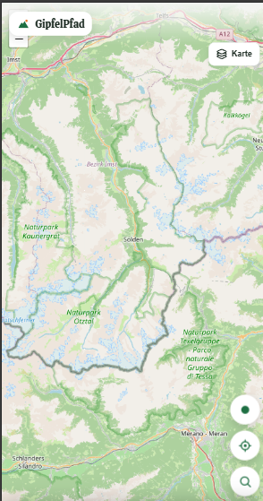
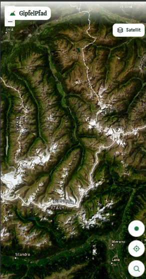
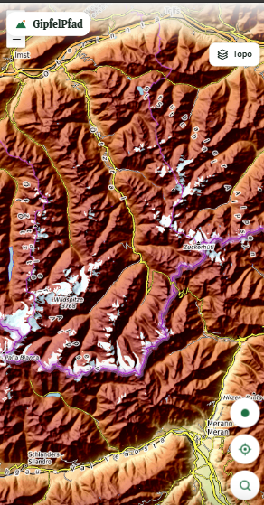

Hüttenplanung, kostenlos.
Mehrtagestour in Etappen aufteilen, Hütten am Weg finden: schon in der kostenlosen Version. Bei vielen Apps steckt das im Abo.
GipfelPfad ist eine Wander-App für den Alpenraum, die gerade entsteht: Touren aus OpenStreetMap, Hüttenplanung kostenlos und eine Community, die die App mit jeder Tour besser macht. Bevor wir starten, wollen wir von dir wissen: Würdest du wechseln?

Wer heute eine Bergtour plant, sucht Route, Schwierigkeit, Hütten, Wetter und Höhenprofil aus vielen Quellen zusammen. Und vieles davon liegt hinter Bezahlschranken.
Mehrtagestour in Etappen aufteilen, Hütten am Weg finden: schon in der kostenlosen Version. Bei vielen Apps steckt das im Abo.
Hütte am Weg, See zum Baden, Rundweg, keine ausgesetzten Stellen. Dazu Wetter am Gipfel, Gehzeit und Höhenprofil.
Keine Werbung, kein Datenverkauf. Routen aus OpenStreetMap, Touren deiner Freunde als Linien auf der Karte statt in einem endlosen Feed.



Am Anfang kennt GipfelPfad nur, was in OpenStreetMap steht. Mit jeder gegangenen Tour, jeder Bewertung und jedem Hinweis lernt die App dazu: wie schwer ein Weg wirklich ist, wie er gerade aussieht und wo es sich lohnt.
Beispiel zur Veranschaulichung. Deshalb ist uns wichtig, dass möglichst viele Wandernde mitmachen, auch in dieser Umfrage.
Ob GipfelPfad eine Chance hat, entscheidest du, nicht unser Businessplan. Nutzt du komoot oder eine andere App? Dann sag uns ehrlich, ob du umsteigen würdest und was dich davon abhält.
Lade Zwischenstand …
Wir sind Johannes Frisch und Jannik Klug und studieren Wirtschaftsinformatik. GipfelPfad entsteht im Modul Entrepreneur- & Intrapreneurship. Den Prototyp gibt es schon als Web-App und Android-Testversion. Ob daraus eine echte App wird, hängt davon ab, ob Wandernde sie wirklich wollen. Genau das prüfen wir mit dieser Umfrage.
Die App ist noch nicht öffentlich. Es gibt hier nichts zu kaufen und nichts herunterzuladen.